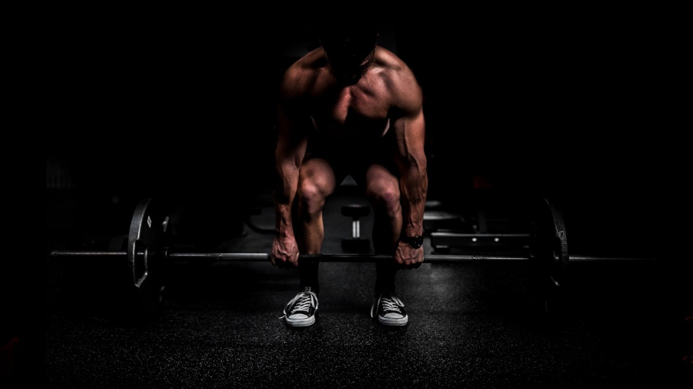
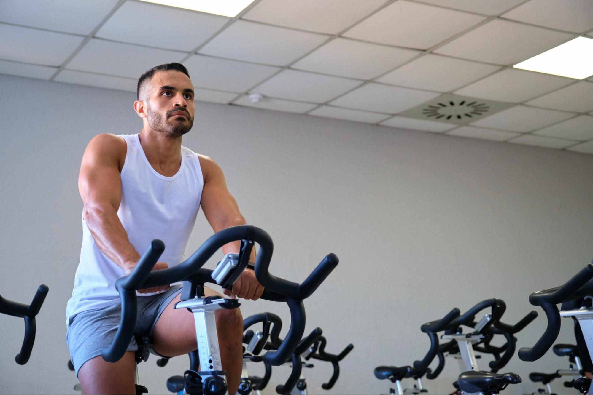

Тренировъчни програми
Открий силови, кардио и функционални тренировки за всяко ниво — от начинаещи до напреднали.

Силови тренировки
Мускулна маса, сила и стабилност

Кардио тренировки
Издръжливост и сърдечно здраве

Функционални тренировки
Баланс, мобилност и контрол
Правилното хранене, възстановяване и ежедневни навици са в основата на всеки устойчив тренировъчен резултат.
Как да избереш правилния тип тренировка?
Всеки тип тренировка има своята роля в изграждането на здраво, функционално и балансирано тяло. Изборът зависи от твоите цели, физическо състояние и ниво на подготовка.
Силовите тренировки подпомагат развитието на мускулната маса и силата. Кардио тренировките подобряват издръжливостта и сърдечно-съдовото здраве, а функционалните тренировки допълват движението чрез баланс и стабилност.